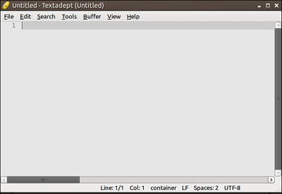
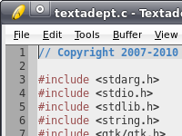
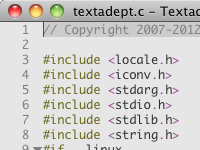
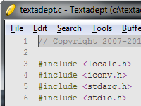
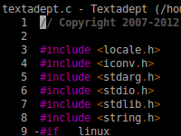
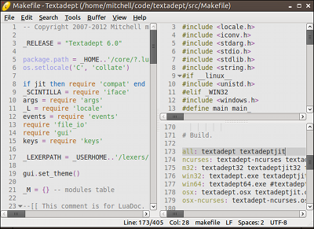
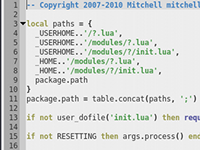
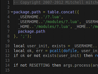
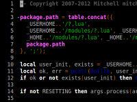
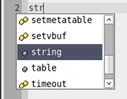

Textadept
A fast, minimalist, and remarkably extensible cross-platform text editor


Please donate or purchase the quick reference to fund continuous development.
Features
Textadept is a fast, minimalist, and remarkably extensible cross-platform text editor.
Fast and Minimalist
Textadept’s user interface is sleek and simple. Relentlessly optimized for speed and minimalism over the years, the editor consists of less than 2000 lines of C code and less than 4000 lines of Lua code.

Cross Platform
Textadept runs on Windows, Mac OSX, Linux, and BSD. It also has a terminal version, which is ideal for work on remote machines.
 
 
Remarkably Extensible
Textadept is an ideal editor for programmers who want endless extensibility without sacrificing speed or succumbing to code bloat and featuritis. The editor gives you complete control over the entire application using the Lua programming language. Everything from moving the caret to changing menus and key commands on-the-fly to handling core events is possible. Its potential is vast.
Multiple Language Support
Being a programmer’s editor, Textadept excels at editing source code. It understands the syntax and structure of more than 100 different programming languages and recognizes hundreds of file types. Textadept uses this knowledge to make viewing and editing code faster and easier. It can also compile and run simple source files.
Unlimited Split Views
Both the graphical version and the terminal version of Textadept support unlimited vertical and horizontal view splitting, even of the same file.

Customizable Themes
Textadept uses themes to customize its look and feel. It comes with built-in light, dark, and terminal themes.
 

Code Autocompletion
Not only can Textadept autocomplete words in files, but it can also autocomplete symbols for programming languages and display API documentation.


Keyboard Driven
Textadept is entirely keyboard driven. The editor defines key bindings for nearly every action. You can easily reassign existing bindings or create new ones. Keys may be chained together or grouped into language-specific keys or key modes.
Self Contained
Textadept’s binary packages are self-contained and need not be installed. No administrator privilages are required either.
Learn More
Comprehensive Manual
Textadept comes with a comprehensive user manual in the application’s doc/ directory. This manual is also available online. It covers all of Textadept’s main features, including installation, usage, configuration, theming, scripting, and compilation.
Exhaustive API Documentation
Since Textadept is entirely scriptable with Lua, its API is heavily documented. This documentation is also located in doc/, is available online, and is the ultimate resource on scripting Textadept. (The editor’s Lua internals also provide abundant scripting examples.)
Quick Reference

This reference contains a wealth of knowledge on how to script and configure Textadept using Lua. It groups the editor’s rich API into a series of tasks in a convenient and easy-to-use manner. It serves as the perfect complement to Textadept’s Manual and API documentation.
Try It Yourself
Learn even more about Textadept by downloading and trying it out yourself. If you’re not completely satisfied, contact us on the mailing list or e-mail me personally (mitchell.att.foicica.com). You may also fork the project, submit patches, or sponsor a feature. Textadept is 100% open source.
Still Not Convinced?
- Textadept has a proven track record, with at least one release every 2 months for 6+ years and no signs of inactivity. Also, as an open-source project, the editor will never fade away.
- Textadept is a real cross-platform desktop application, backed by a world-class editing engine that dozens of editors and IDEs have depended on for over 15 years.
- Textadept is scriptable in a language that was carefully designed to run on any platform at high speed and with a minimal memory footprint. Lua is used everywhere from video games to embedded devices. It is easy to learn too!
- Textadept is very resource efficient, consuming merely 15MB of RAM at startup and hardly any CPU while under load. Even with over 20 of its own source files open at once, Textadept does not exceed 20MB of RAM usage and has no input lag at all.
- Textadept does not rely on external packages to provide its functionality and does not depend on a package ecosystem to thrive. The editor gives you plenty of the tools you need out of the box.
- Textadept has sensible defaults and does not expect you to spend hours customizing it before you can start being productive.
- With fewer than 30 main source files comprising less than 6000 lines of heavily documented code, Textadept’s internals are remarkably easy to read, understand, keep track of, and extend to your liking.
- Did you see that there is a terminal version in case you need to do work on a remote server?
- Textadept does not track you. It does not attempt to connect to the internet – it is just a text editor.
FAQ · Media · Stats · Technologies · Credits
*Warning: nightly builds are untested, may have bugs, and are the absolute cutting-edge versions of Textadept. Do not use them in production, but for testing purposes only.